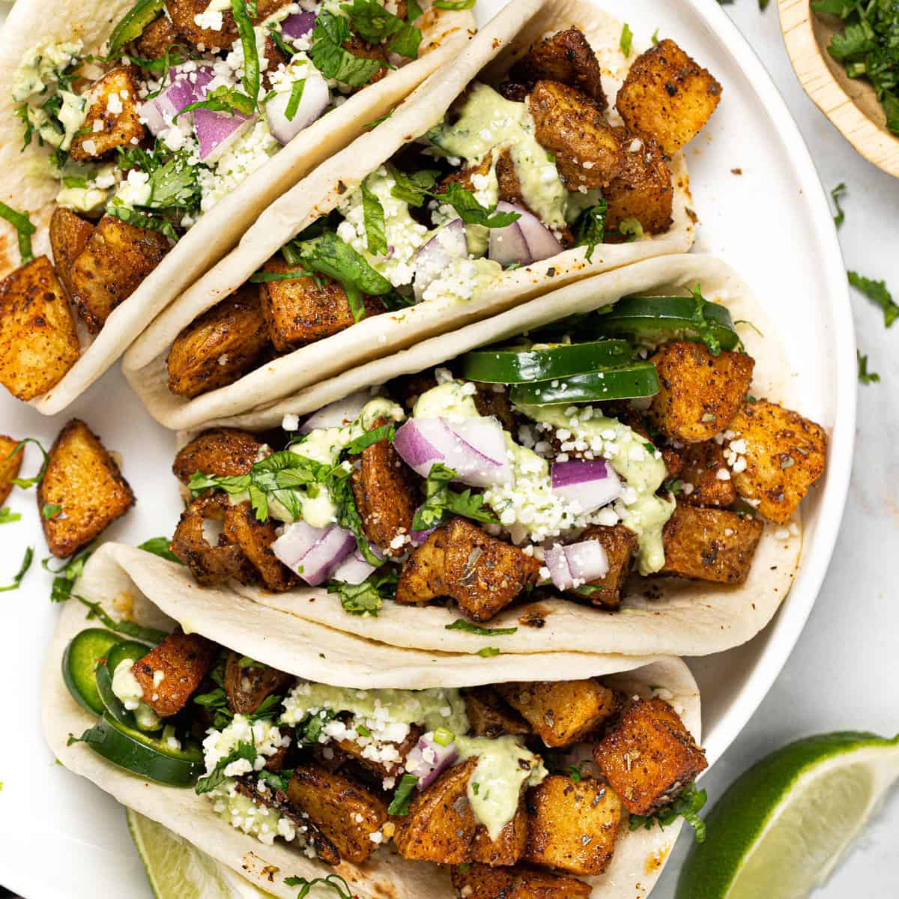

A LITTLE INSPIRATION FOR YOUR KITCHEN
What sounds
good today?
Pick a mood, find a recipe, and make something lovely with what you have.

01 — PICK YOUR MOOD
What are you craving?
02 — SOMETHING DELICIOUS
A cozy kind of day
YOUR LITTLE DASHBOARD
YourKitchen at a glance
31 recipes are built in and work offline. Online search can discover 10,000+ recipes across different cooking sites; it shows a few matching ideas at a time and links to the original pages for their full instructions.
GOOD FOOD, YOUR WAY
A recipe is a starting point.
Swap an ingredient, turn up the spice, or make it your own. The best part is sitting down to eat.
Share if you like.
A LITTLE SOMETHING FOR YOU
Picked for you
Search for dishes or ingredients and we’ll tailor these picks. They refresh each day.
COOKING IS BETTER TOGETHER
Recipes from other kitchens
Share a family favourite, a weeknight win, or something you invented. Once the community service is connected, your recipe can appear here for everyone.
These recipes were shared by other YourKitchen users.
YOUR KITCHEN SIDEKICK
Ask AI for a recipe
Tell us what you’re craving, what you have, or what you’d like to try. Your prompt is sent to OpenAI to generate ideas; learn about your data.
AI recipe ideas need an internet connection. Your saved and built-in recipes work offline.
MIX, TASTE, INVENT
Food Lab
Bring a few ingredients and a flavor direction. YourKitchen AI will dream up dishes to try, with links to recipe sites for more inspiration.
AI ideas need an internet connection and the hosted recipe service.
YOUR LITTLE RECIPE BOX
Saved for later (0)
Recipes you save will be waiting here.
YOUR KITCHEN, YOUR WAY
Your kitchen, your story
You’re browsing as a guest. Your recipes, ideas, and preferences are saved on this device.
Add your Supabase project URL and publishable key to supabase-config.js, then run the included database setup. Setup steps · Privacy
YOUR COOKING JOURNEY
Recipes you’ve explored
Your recently opened recipes will appear here.
Your Food Lab experiments
Your invented dishes will be saved here.
YOUR TASTE PROFILE
What do you love?
Choose a few favourites to shape your daily picks.
A LITTLE PLAN FOR THE WEEK
Meal planner & shopping list
HERE WHEN YOU NEED A HAND
Your kitchen companion
Ask about cooking techniques, substitutions, meal ideas, or how to use up ingredients.
Hi! What are you cooking or curious about today?
A LITTLE FOOD FUN
Kitchen games
Which ingredient gives pesto its classic fresh, peppery flavour?
Your score: 0
A NOTE FROM YOU
Help us make YourKitchen even lovelier
Have an idea, a recipe request, or something that made you smile? We’d love to hear it.
PLANT-BASED PICKS
Good food, all vegan
Comforting favourites made with plant-based ingredients. Check packaged food labels, especially breads, noodles, stock, and chocolate.
Search online for more plant-based recipes; source links will be shown.
These recipes use plant-based ingredients; they are not certified allergen-free. Check labels and cross-contact information for your needs.